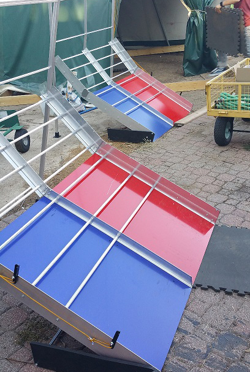
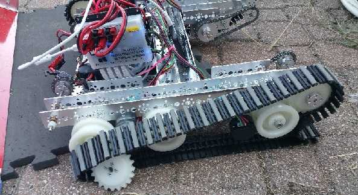

Today, for the third time, we worked on setting up the field. We finished the mountains and the climber setup. We made several mistakes along the way. Firstly, we screwed the mountain climber mounts in wrong, not one or two times, but three times. Then, we realized that the mountains couldn't even fit inside the tent and the wooden boundaries. So, we had to dissasemble it, rotate each board 45 degrees, and reassemble it. After everything was put back together, we tested the robot on the mountain. It was unable to climb the first section, and then, it failed miserably.

We have to go back to the drawing board on our robot design.
Today, we learned we still have a long way to go with the robot. Tomorrow, we should be able to finish the field and start testing on the mats.